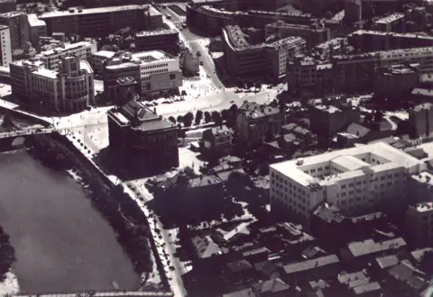
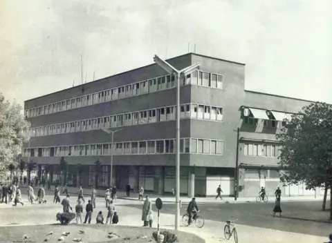
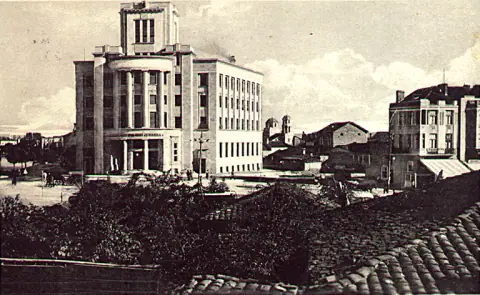

Стара оријентациона карта
38 знаменитости на старом плану Скопља. Додирните или кликните тачку да видите фотографију.


Арапска кућа

Бетонски мост

Бит пазар


Главна пошта


Градска болница

Градска плажа

Даут-пашин амам

Дрвени мост

Гвоздени мост

Железничка станица

Инвалидски дом

Камени мост

Католичка црква

Куршумли хан

Мустафа-пашина џамија


Народна банка

Народна библиотека

Официрски дом


Трг Македонија

Трг слободе

Пошта 2

Сахат-кула

Сајмиште


Св. Димитрије

Свети Спас

Скупштина Македоније

Споменик палим борцима

Стара главна улица

Студентски дом

Тврђава Кале

Позориште

Ул. Кочо Рацин

Ул. 11. октобар

Филозофски факултет

Хотел Македонија
Панорама